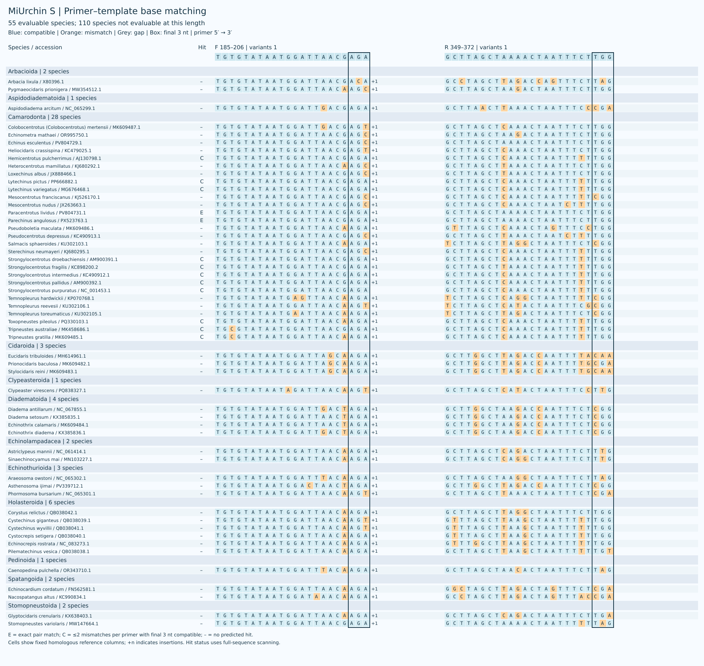
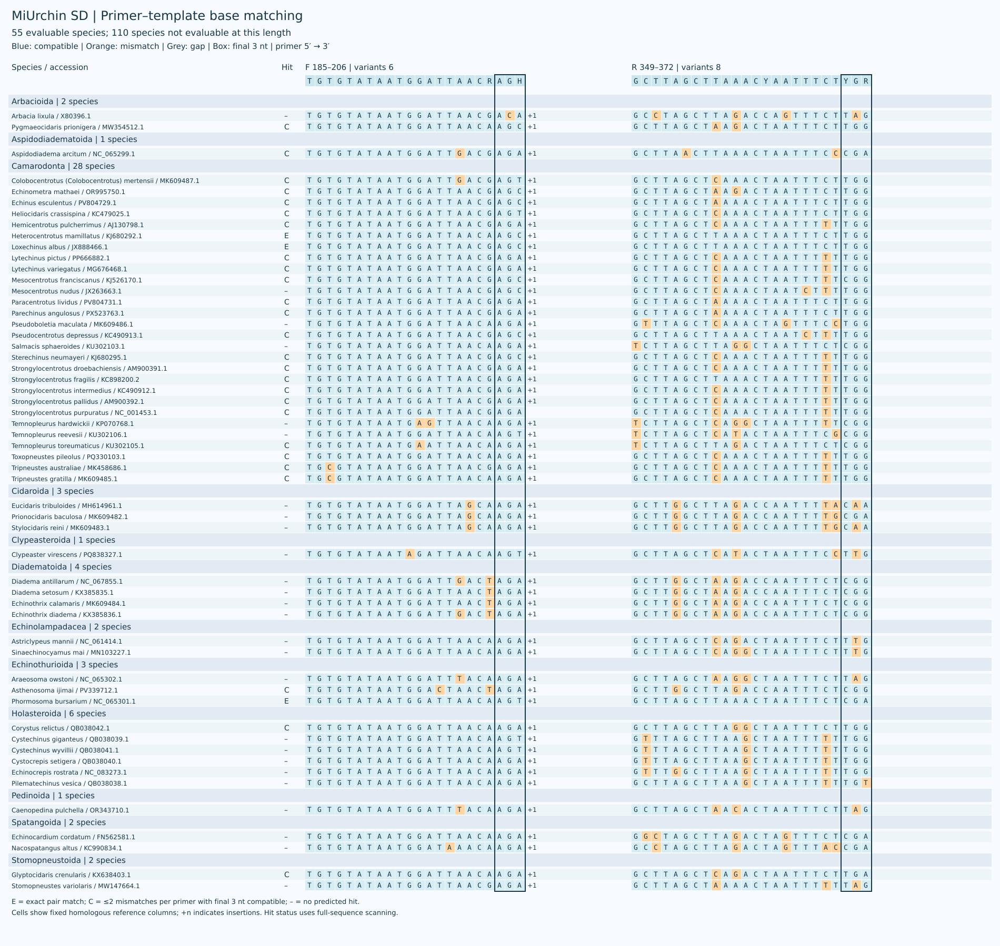
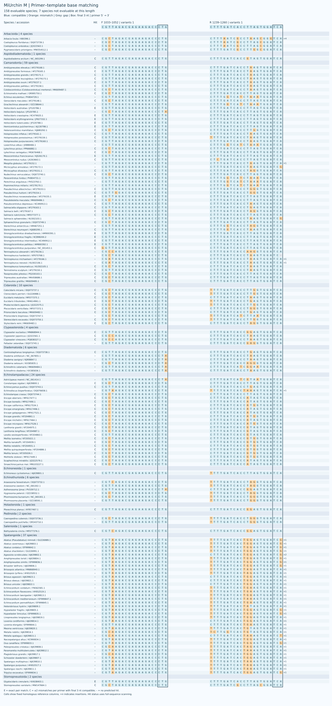
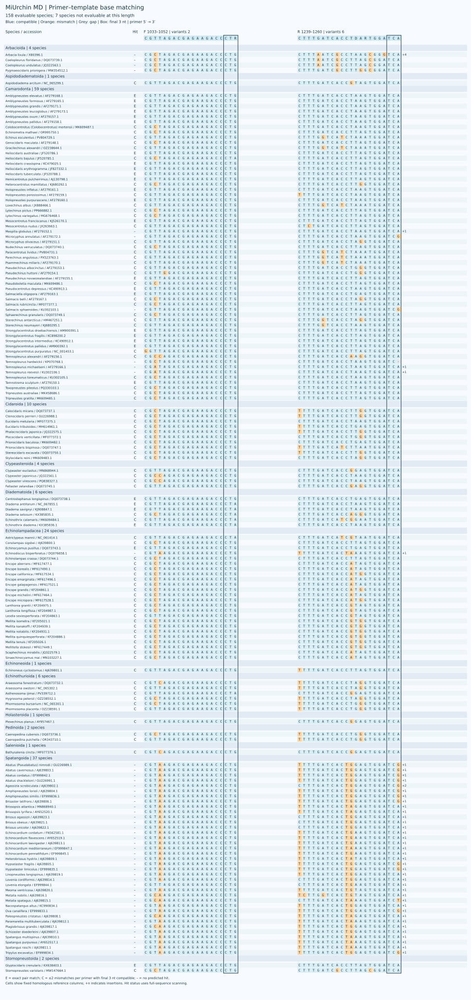
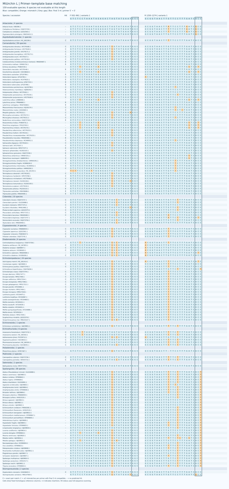
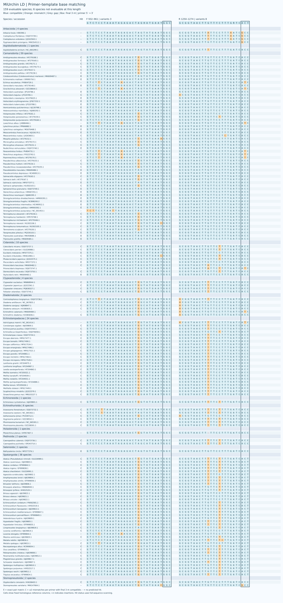
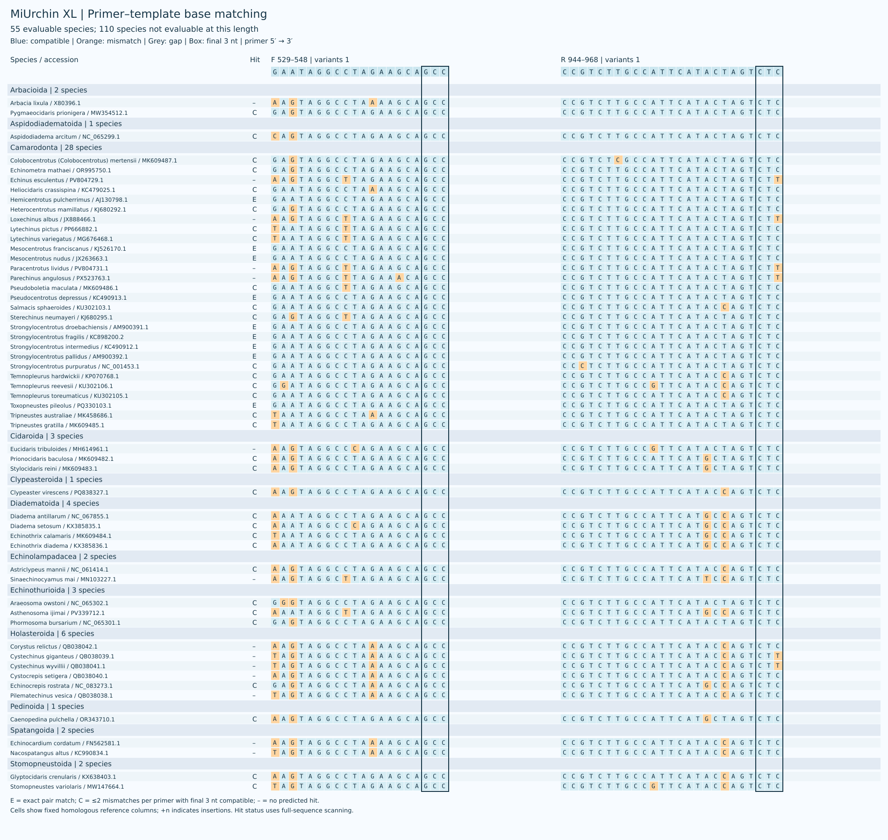
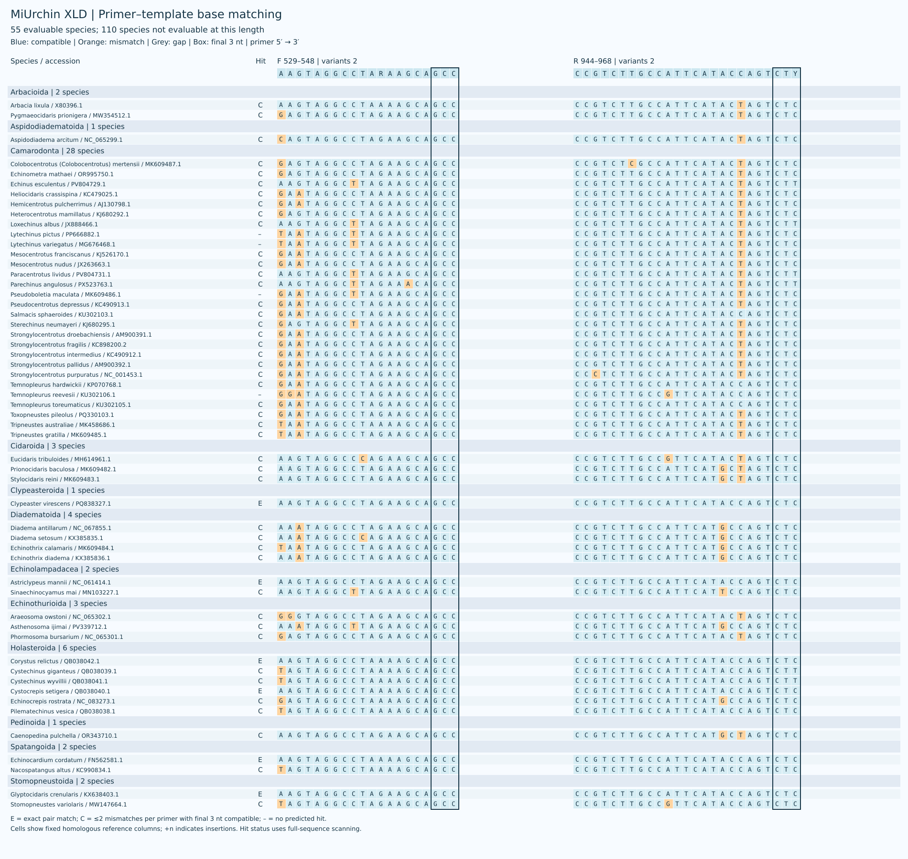

海胆环境 DNA 线粒体 16S rRNA 引物，包含 S、M、L、XL 四个长度。每个长度保留普通单对和简并单对 D；同一长度的引物使用相同参考坐标。 参考面板包含 165 个物种，各长度分别有 55、158、159、55 个可评价物种；缺失结合区域不计为漏检。图示使用旧分类体系，新面板的目级名称以 WoRMS 为准。
参考面板 / Reference panel · 审核 / Reference curation

| Name | Coverage | Exact | Strict WC / GT | WC≤3 / GT≤2 |
|---|---|---|---|---|
| S | 13/55 (23.64%) | 2/55 (3.64%) | 0 / 0 | 0 / 0 |
| SD | 29/55 (52.73%) | 3/55 (5.45%) | 0 / 0 | 3 / 0 |
| M | 85/158 (53.80%) | 12/158 (7.59%) | 0 / 0 | 0 / 0 |
| MD | 110/158 (69.62%) | 28/158 (17.72%) | 0 / 0 | 0 / 0 |
| L | 103/159 (64.78%) | 18/159 (11.32%) | 0 / 0 | 2 / 1 |
| LD | 141/159 (88.68%) | 30/159 (18.87%) | 2 / 12 | 12 / 12 |
| XL | 41/55 (74.55%) | 9/55 (16.36%) | 2 / 3 | 3 / 5 |
| XLD | 51/55 (92.73%) | 6/55 (10.91%) | 0 / 4 | 6 / 6 |
覆盖要求每条引物最多 2 个错配且末端 3 nt 兼容；完全匹配要求两条引物零错配。严格 WC/GT 使用末端约束；WC≤3 / GT≤2 是不施加末端约束的非目标筛查。
简并引物每条最多 8 个具体变体，简并位点限于 3′ 半段。结果为计算预测，仍需实验验证。
| Name | F (5′→3′) | R (5′→3′) |
|---|---|---|
| S | TGTGTATAATGGATTAACGAGA |
GCTTAGCTAAAACTAATTTCTTGG |
| SD | TGTGTATAATGGATTAACRAGH |
GCTTAGCTTAAACYAATTTCTYGR |


| Name | F (5′→3′) | R (5′→3′) |
|---|---|---|
| M | CGTTAGACGAGAAGACCCTG |
CTTTGATCACCTTAGTGGATCA |
| MD | CGTTAGACGAGAAGACCCTR |
CTTTGATCACCTDARTGGATCA |


| Name | F (5′→3′) | R (5′→3′) |
|---|---|---|
| L | GTCTCCTAAATAGAGACTAGTATGAATGGC |
GCGGTAACTTGTTCCTTTGATCACC |
| LD | GTCTCCTAAATAGAGACTAGHATGAATGGC |
GCGGTAACTTGTTYCTTTGRTCACY |


| Name | F (5′→3′) | R (5′→3′) |
|---|---|---|
| XL | GAATAGGCCTAGAAGCAGCC |
CCGTCTTGCCATTCATACTAGTCTC |
| XLD | AAGTAGGCCTARAAGCAGCC |
CCGTCTTGCCATTCATACCAGTCTY |

